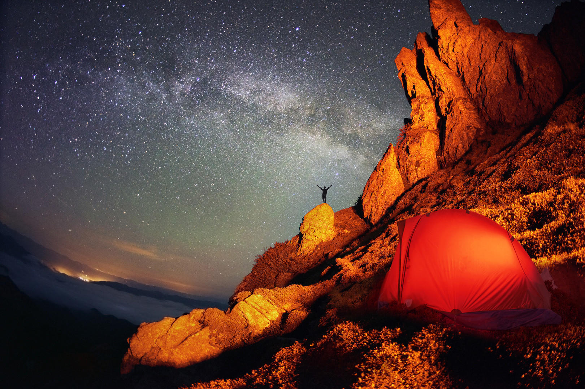

Start Here
Your Basecamp.
New to WKND Adventures? Pick an activity, find a route, and get moving. No prior experience required — just curiosity and decent footwear.
Browse by Activity


Common Questions
Most routes on WKND Adventures are graded for difficulty and include honest assessments of fitness requirements. Some are weekend walks. Some are serious alpine undertakings. Every route page tells you exactly what you're getting into — elevation gain, technical sections, gear requirements, and the fitness baseline we'd recommend. Start with anything tagged Beginner or Moderate and work from there.
Start with the Destinations section — it's organised by region, and every destination page links to every relevant route, gear guide, and field note we've published for that area. If you already know the activity you want, use the tabs above to browse by type. Read at least one full trip report before you commit. The conditions section alone will save you a bad weekend.
That depends entirely on the activity. Our Gear section breaks it down by discipline — but the universal essentials are: proper footwear fitted to your activity, weather-appropriate layers, navigation (map, compass, or GPS), water, food, and a first aid kit. Don't overbuy. Rent or borrow before you invest. The gear guides include budget alternatives for everything.
Yes, with caveats. Many of our routes are solo-friendly — well-marked trails, established campsites, reliable cell coverage. Others are emphatically not. Every route page includes a solo suitability note. If you're new to solo travel, start with popular routes in well-trafficked areas and leave a detailed itinerary with someone who'll notice if you don't check in.